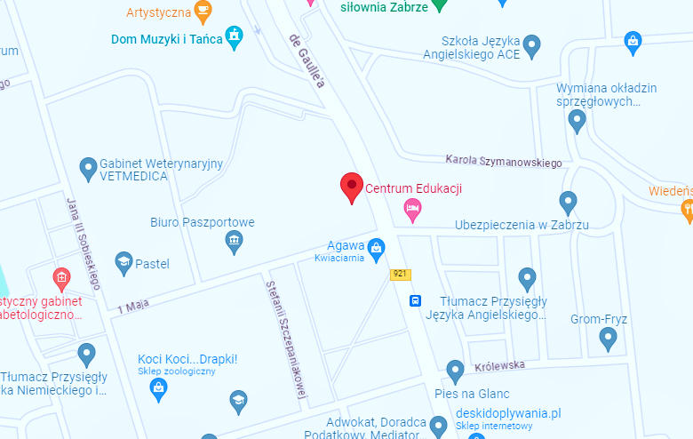
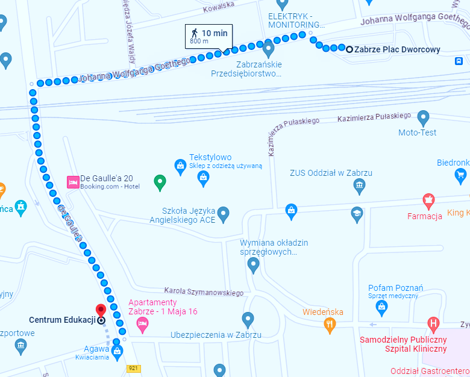

Dyrekcja
Dyrektor
mgr Marian Kitel
Z-ca dyrektora
mgr Mariusz Świetlik
Z-ca dyrektora
mgr inż. Joanna Pytlik
Adres
ul. 1 Maja 12,
41-800 Zabrze
Dojazd
Szkoła położona jest w centrum Zabrza, przy skrzyżowaniu ulicy de Gaulle'a z ulicą 1 Maja. Sąsiaduje z Komendą Miejską Policji oraz Domem Muzyki i Tańca.

Autobusy
Linie 23, 32, 47, 111, 199, 647 dojeżdżają na przystanek znajdujący się pod szkołą - Zabrze Komenda Policji. Inne linie autobusowe dojeżdżają na Plac Dworcowy, który znajduje się 800m od placówki.
Tramwaje
Remont torowiska przy ul. Wolności spowodował tymczasową przerwę w ruchu tramwajów.
Pociągi
Peron kolejowy znajduję się na Placu Dworcowym 800m od placówki.
Jak dojść do placówki z Placu Dworcowego?
